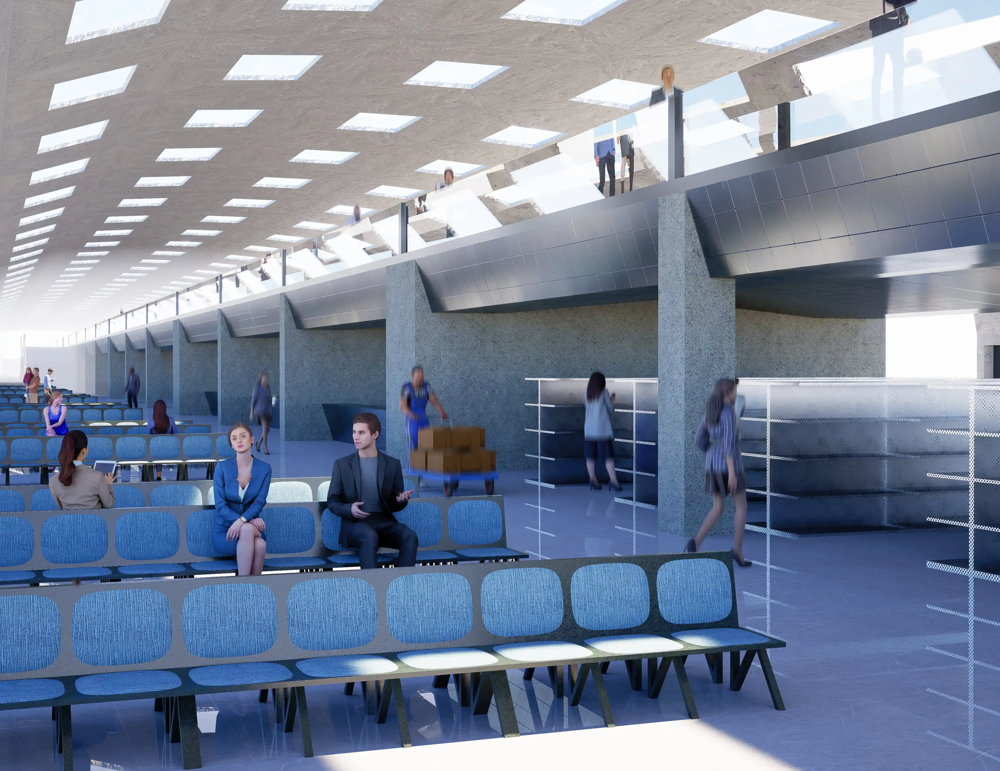
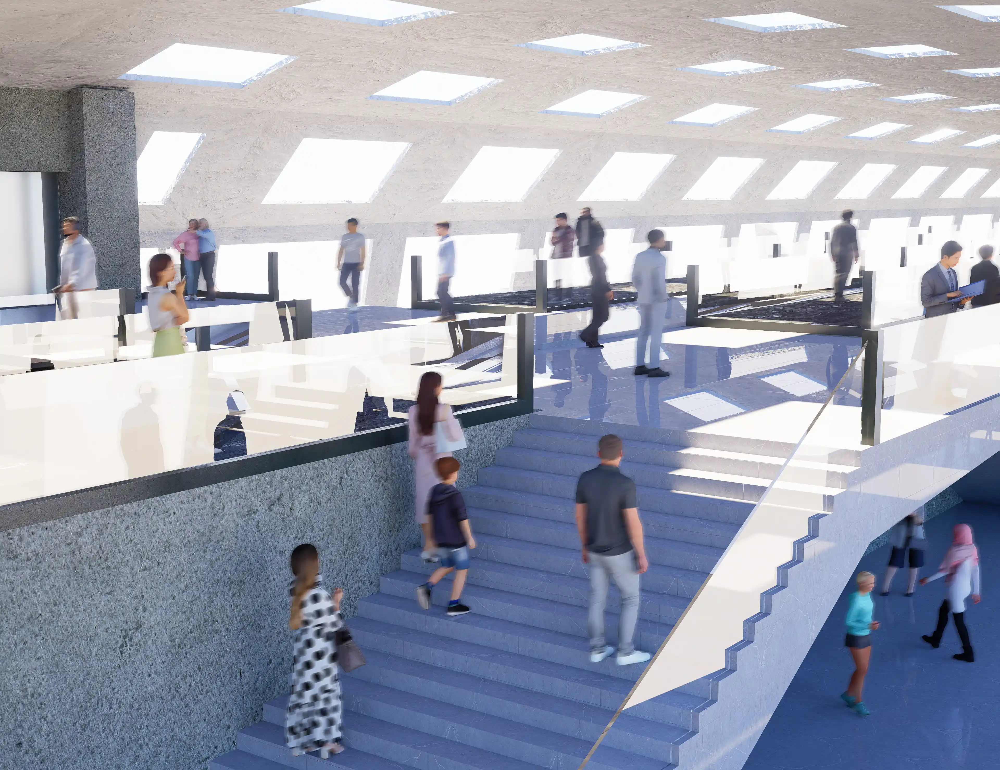
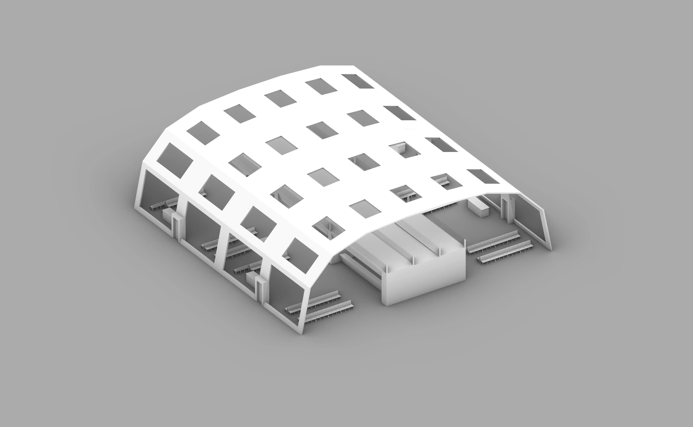
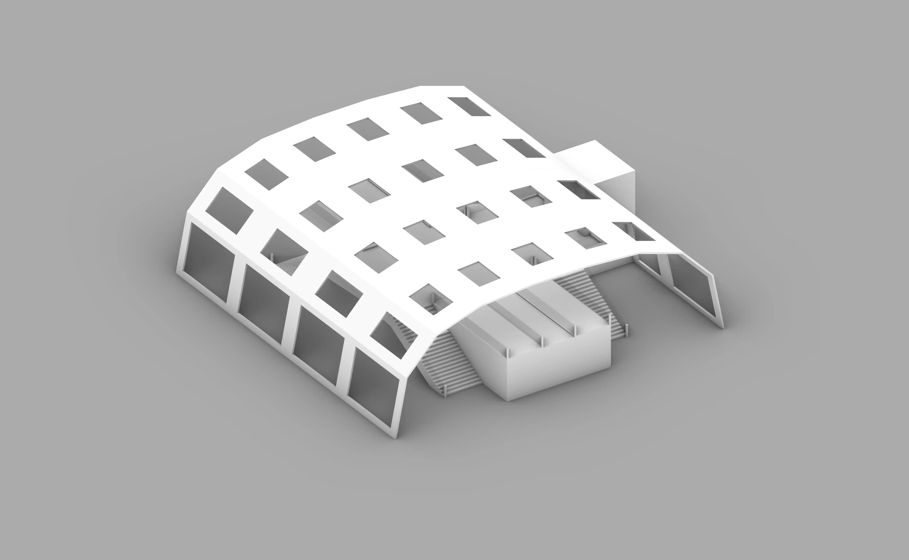

Rendered view of the terminal highway.
Winter 2025
Inspired by the complexity of airports with their many different crucial functions, I designed a new layout for terminal passageways that combine retail, dining, and transit into one compact footprint. All three modules contain the central elevated “highway” featuring two moving walkways and a pathway in the middle for accessibility transport. One module features four stairways and an elevator to allow people to get form one level to the other. The other two modules have four gates along the sides with shops and restaurant spaces below the walkway. There is a version with three different stores and another with one large space. This project was important because it led me to learn how to design for more specific programs and how to present ideas in multiple different ways. For example, in this project, I explored axonometric views, sectional perspective views, and realistic renders.
Rendered view of the terminal highway.



